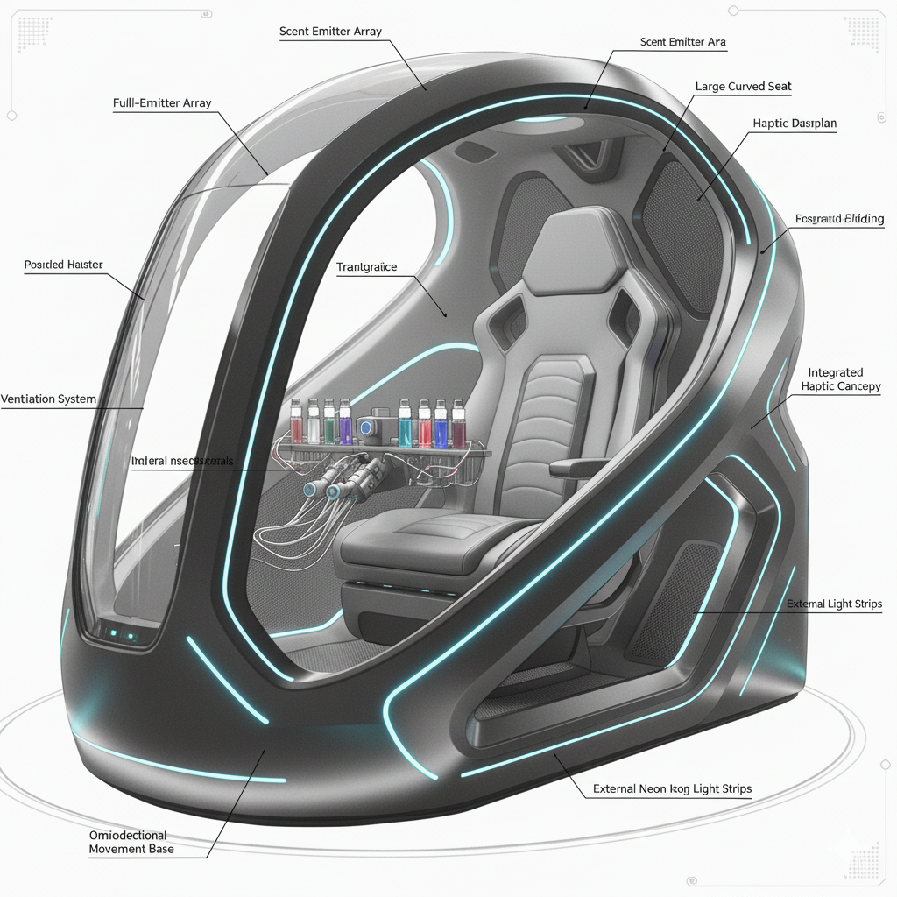
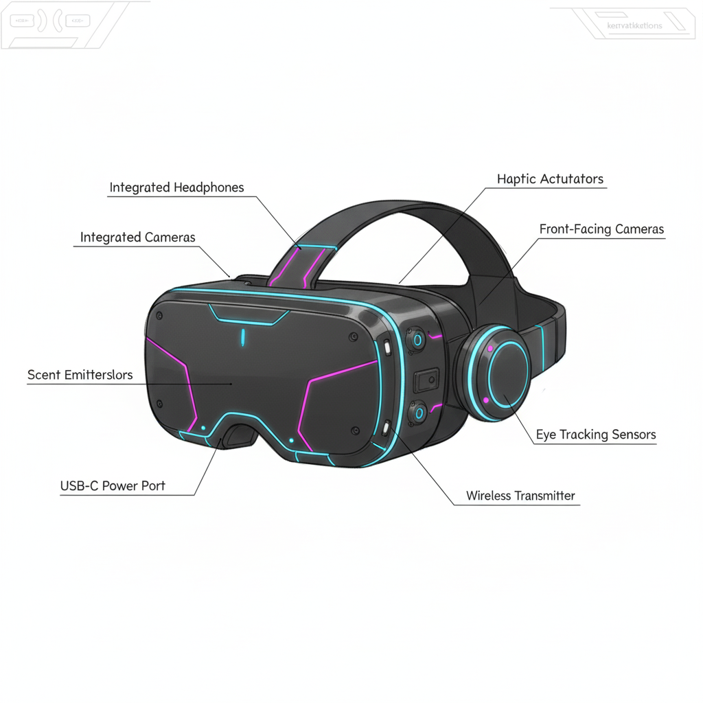
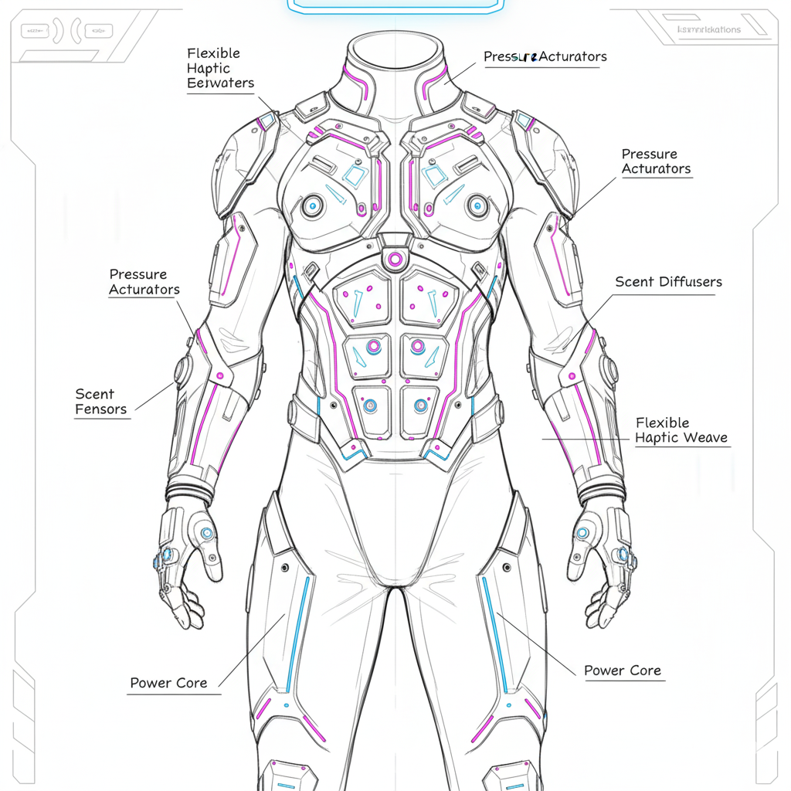
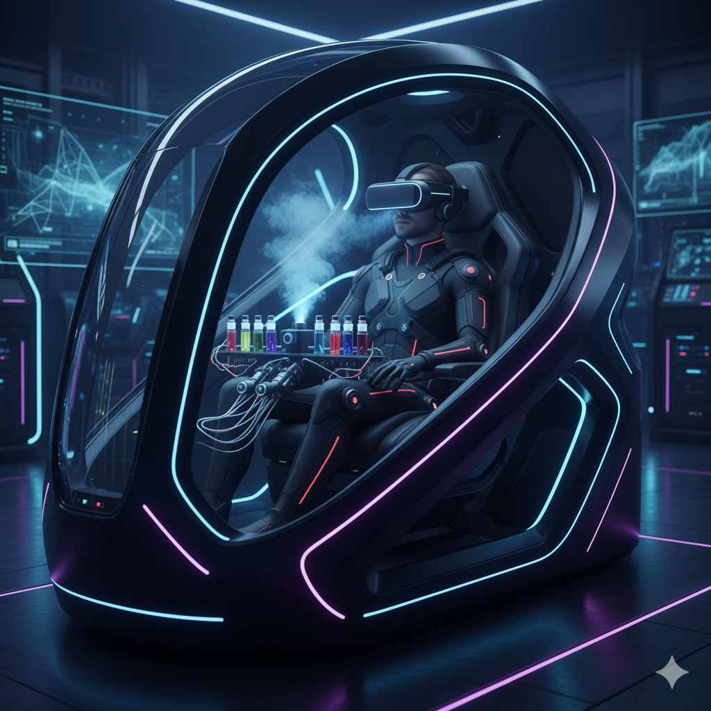
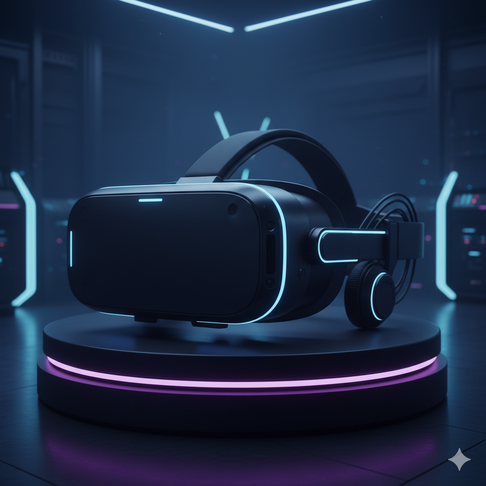
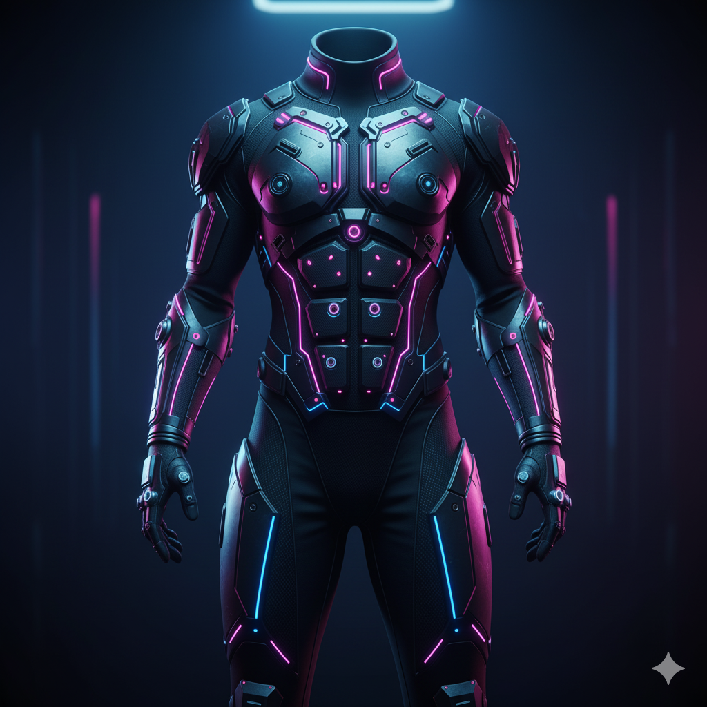

Pernahkah Anda bermimpi untuk tidak hanya memainkan sebuah game, tetapi benar-benar hidup di dalamnya? Sentient Core adalah platform imersi sensorik yang dirancang untuk mendefinisikan ulang batas antara realitas dan dunia virtual.
Jelajahi evolusi konsep revolusioner ini dari ide awal hingga tantangan implementasinya.
Perjalanan pengembangan dari ide dasar hingga pertimbangan implementasi
Memperkenalkan Sentient Core, sebuah platform imersi sensorik yang dirancang untuk mendefinisikan ulang batas antara realitas dan dunia virtual. Tujuannya bukan lagi sekadar "membawa" pengguna ke dalam game, melainkan membangkitkan dunia digital yang terasa hidup dan berkesadaran ('Sentient'), dengan menjadikan pengguna sebagai pusat atau 'Core' dari realitas tersebut.
Inti dari interaksi pengguna adalah sistem penerjemahan langsung dari aksi-di-dalam-game ke reaksi-fisik. Pengguna masuk ke dalam kapsul, dan sistem akan merespons setiap interaksi berdasarkan logika sebab-akibat yang instan:
Sentient Core diposisikan sebagai platform ekosistemnya sendiri. Pengembang game didorong untuk menciptakan konten dengan "lapisan sensorik", membuka dimensi baru dalam desain narasi dan gameplay.
Sketsa dari ide-ide yang sedang dikembangkan.



Visualisasi dari ide-ide yang sedang dikembangkan.


